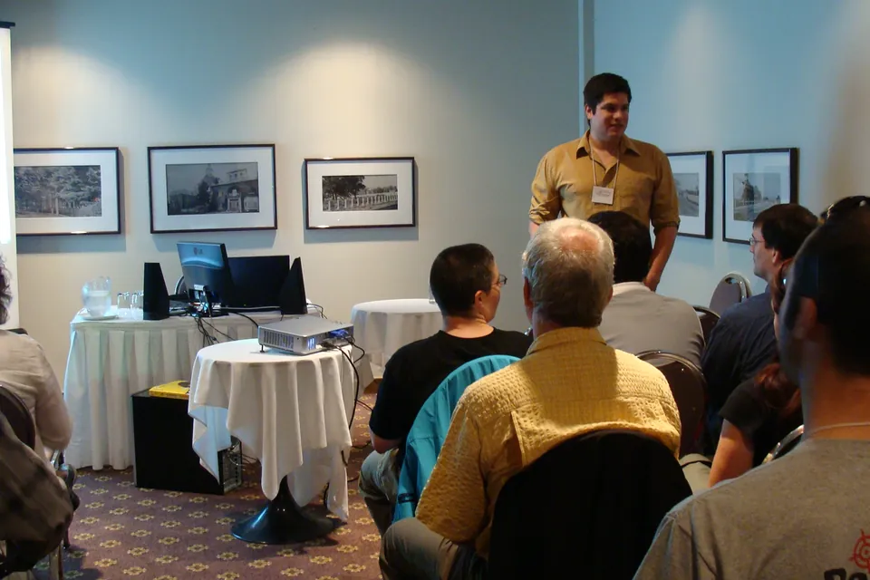

Vulgarisation scientifique : rendre les savoirs intelligibles, discutables et accessibles
Fondements conceptuels, état des connaissances, données internationales, formats de communication, engagement des publics et enjeux d’évaluation.

Communiquer la science ne se réduit pas à transmettre des faits
La vulgarisation scientifique transforme la forme d’un savoir sans en modifier indûment la portée. Elle donne des repères pour comprendre une méthode, apprécier la solidité d’un résultat et situer les incertitudes. Mais une information parfaitement exacte n’est pas nécessairement comprise, jugée pertinente ou mobilisée.
La recherche sur la communication des sciences étudie les interactions entre messages, publics, institutions, médias, situations de décision et relations de confiance. Elle invite à définir le but recherché (compréhension, dialogue, participation ou utilisation) avant de choisir le format. Les National Academies rappellent qu’un modèle de diffusion unidirectionnel ne répond pas à tous les objectifs, notamment lorsque des valeurs, des conséquences collectives ou des controverses sont en jeu [1].
Ce dossier sélectionne principalement des rapports institutionnels, des études expérimentales, des recherches comparatives et des synthèses récentes. Il ne prétend pas à l’exhaustivité : aucune stratégie bibliographique enregistrée, aucun double dépistage ni appréciation exhaustive du risque de biais n’ont été réalisés. Lorsque les données proviennent d’une enquête transversale, on décrit des associations et non des effets causaux.
Vulgarisation, diffusion, médiation, participation : des objectifs distincts
La vulgarisation scientifique vise à exposer des connaissances et la manière dont elles ont été produites dans des termes compréhensibles pour un public non spécialiste. Elle implique une sélection, une hiérarchisation, un changement de registre et souvent le recours à des exemples. Sa fidélité ne se mesure pas à la présence de chaque détail, mais au respect des résultats, de leur degré de certitude et de leurs conditions de validité.
La communication scientifique est une catégorie plus large, qui inclut des échanges entre spécialistes, la diffusion publique, la communication institutionnelle et l’information dans les médias. La médiation scientifique ajoute souvent un dispositif d’appropriation : visite, exposition, dialogue avec un chercheur, atelier ou activité participative. L’engagement des publics implique, à des degrés divers, la prise en compte des préoccupations et, parfois, une influence réelle sur les questions, les méthodes ou les décisions. La mobilisation des connaissances concerne les conditions de circulation et d’utilisation des savoirs dans l’action ; l’implantation interroge spécifiquement l’adoption et la pérennité des pratiques.
| Démarche | Question directrice | Exemples | Résultat que l’on peut évaluer |
|---|---|---|---|
| Diffusion | L’information est-elle accessible ? | Site, communiqué, publication | Accès, consultation, portée |
| Vulgarisation | Le contenu est-il compris sans contresens ? | Article explicatif, schéma, vidéo | Compréhension, rappel, interprétation |
| Médiation | Comment les publics s’approprient-ils les savoirs ? | Exposition, atelier, dialogue | Questionnement, reformulation, échanges |
| Participation | Les publics peuvent-ils agir sur le processus ? | Délibération, recherche participative | Qualité de participation, influence, restitution |
| Mobilisation | Le savoir est-il utilisable par les acteurs ? | Synthèse adaptée, courtage, coproduction | Appropriation, usage documenté |
| Implantation | Une pratique est-elle réellement mise en œuvre ? | Stratégies d’implantation, accompagnement | Adoption, fidélité, adaptation, maintien |
Typologie analytique de ce dossier, issue de la distinction des objectifs discutée par les National Academies [1] et du principe d’ouverture des processus de recherche à d’autres acteurs dans la Recommandation de l’UNESCO [5]. Les frontières varient selon les traditions disciplinaires.
Trois grandes familles de modèles et leurs limites
Le modèle du déficit pose que des difficultés de compréhension ou de confiance résultent principalement d’un manque de connaissances. Il peut justifier une explication pédagogique utile, mais devient insuffisant lorsqu’il présume que la transmission de faits corrige automatiquement les attitudes. Les modèles de dialogue considèrent les publics comme des interlocuteurs dont les attentes, les savoirs et les préoccupations orientent les échanges. Les modèles de participation vont plus loin lorsqu’ils prévoient un pouvoir d’action ou de décision. Ces modèles ne sont pas des périodes historiques étanches : ils coexistent et peuvent se combiner selon le problème.
Expliquer
Établir le message, son niveau de preuve et les connaissances préalables.
Écouter et répondre
Faire place aux questions, objections, expériences et incertitudes.
Partager la définition du problème
Discuter des priorités et rendre visible l’influence des contributions.
Documenter les effets
Mesurer compréhension, participation et suites, plutôt que compter uniquement les vues.
Schéma de synthèse éditoriale, non reproduit d’un rapport et non assimilé à un modèle causal validé. Fondements : National Academies (2017) [1] et UNESCO (2021) [5].
L’enjeu est de définir ce qu’on cherche à obtenir sans substituer un indicateur commode au phénomène étudié. Une vidéo visionnée par dix mille personnes peut avoir une très forte portée sans modifier l’interprétation d’un concept. À l’inverse, un atelier réunissant quelques participants peut apporter une connaissance fine des obstacles à l’appropriation, sans représenter la population générale.
Ce que la recherche permet d’affirmer et ce qui reste discuté
L’efficacité dépend du message, de la situation et de ce que l’on mesure
La synthèse des National Academies (2017) met en relation les caractéristiques des publics (connaissances antérieures, numératie, valeurs, appartenance sociale) avec la perception de crédibilité, le cadrage de l’information et l’environnement médiatique [1]. Elle identifie davantage une architecture de questions de recherche qu’une formule universelle. La communication peut contribuer à la compréhension ou soutenir une décision sans en déterminer à elle seule l’issue. L’exposition, l’adhésion et le changement de pratique sont des résultats distincts.
La confiance est multidimensionnelle
Cologna et ses collègues distinguent compétence, intégrité, bienveillance et ouverture à la critique, plutôt que de traiter la confiance comme un jugement unique. Dans leur enquête, la compétence perçue est en moyenne plus élevée que l’ouverture perçue aux autres points de vue. Les auteurs soulignent que les réponses varient selon les contextes nationaux et que la comparabilité métrique parfaite des échelles n’est pas établie [3].
La correction des fausses informations n’est pas une intervention « magique »
Les travaux sur la désinformation appellent à distinguer une croyance erronée, la détection d’une information incorrecte, l’intention déclarée et le comportement effectif. Dans une expérience menée dans douze pays, six stratégies d’inoculation contre des messages de désinformation climatique n’ont apporté que très peu de protection, alors que l’exposition à la désinformation dégradait plusieurs indicateurs. Ce résultat contredit l’idée qu’une intervention courte peut, à elle seule, neutraliser des contenus trompeurs dans tous les contextes [6].
Le numérique élargit les formats, pas nécessairement la portée sociale
Les plateformes rendent disponibles vidéos, balados, carrousels, résumés et séances en direct. Elles produisent aussi des mesures faciles à suivre (impressions, clics, partages, commentaires) qui n’évaluent pas la compréhension. Les algorithmes de recommandation, les contraintes linguistiques et les inégalités d’accès doivent être considérés. Les publics rencontrés par une publication ne se confondent pas avec l’ensemble des publics concernés par un problème. La Recommandation de l’UNESCO sur la science ouverte établit l’accessibilité et la participation comme des exigences plus larges que la seule mise en ligne [5].
Confiance dans la science : une lecture des enquêtes internationales
Le Wellcome Global Monitor 2026 s’appuie sur plus de 140 000 réponses recueillies dans 140 pays en 2025. Pour la comparaison des vagues 2018, 2020 et 2025, le rapport retient les 108 pays présents aux trois dates. La proportion déclarant avoir « un peu » ou « beaucoup » confiance dans la science est passée de 77 % en 2018 à 80 % en 2020, puis 72 % en 2025. Ces chiffres ne doivent pas être lus sans l’avertissement du rapport : des changements de mode d’enquête, notamment en Chine, influencent les comparaisons temporelles [2].
Données : Wellcome Global Monitor (2026), résultats comparables sur trois vagues. Représentation graphique réalisée à partir des valeurs du rapport, et non fac-similé de sa figure. Consulter les graphiques originaux et les tableaux de Wellcome ↗
Le même rapport observe des écarts liés à la situation économique déclarée : 39 % des personnes vivant confortablement disent avoir « beaucoup » confiance dans la science, contre 20 % parmi celles qui éprouvent des difficultés financières. Ces comparaisons décrivent une association et non un effet causal de l’aisance sur la confiance. De même, 81 % considèrent que le travail des scientifiques bénéficie aux personnes comme elles, tandis que 37 % seulement jugent qu’il bénéficie à la majorité des personnes dans leur pays [2].
Part déclarant faire « beaucoup » confiance à la science ; catégories de situation économique auto-déclarées. Graphique réalisé à partir de Wellcome (2026), chapitre 2 ; enquête observationnelle [2].
Une autre enquête, publiée dans Nature Human Behaviour, a recueilli les réponses de 71 922 personnes dans 68 pays entre novembre 2022 et août 2023. Sur une échelle de confiance envers les scientifiques allant de 1 à 5, la moyenne agrégée est de 3,62. Les auteurs relèvent que 78 % considèrent les scientifiques qualifiés pour mener des recherches importantes, alors que 42 % estiment que les scientifiques prêtent attention aux opinions d’autrui. Cette dissociation renseigne sur une difficulté de relation et d’écoute, pas seulement de compréhension [3].

Une communication responsable ne doit donc pas inférer, à partir d’une mesure globale, que chaque population « croit » ou « ne croit pas » la science. Les objets de confiance, la formulation de la question, la temporalité et la situation concrète importent.
Incertitude, consensus, désinformation : trois enseignements expérimentaux
Rendre l’incertitude visible
Dans quatre expérimentations et une étude de terrain, van der Bles et ses collègues (2020) ont étudié la réception d’informations comportant différents modes d’expression de l’incertitude. L’emploi de fourchettes numériques entraînait globalement un effet limité sur la confiance déclarée. La formulation verbale pouvait produire des résultats différents selon les indicateurs. Ces observations ne prouvent pas que toute annonce d’incertitude est sans conséquence : le sujet, l’institution qui parle et la manière de présenter les limites demeurent essentiels [7].

Exprimer le consensus scientifique
Dans une expérience préenregistrée conduite auprès de 10 527 participants issus d’échantillons en ligne de 27 pays, un message rappelant le consensus scientifique sur l’origine humaine du changement climatique a sensiblement réduit les erreurs d’estimation de ce consensus (effet standardisé d = 0,47 ; IC à 95 % : 0,41–0,52). Les changements directs d’autres attitudes, dont le soutien à l’action publique, étaient en revanche plus faibles ou absents. Une amélioration d’un indicateur de compréhension n’implique donc pas mécaniquement une transformation de tous les comportements [8].
Réagir aux fausses informations
La méta-analyse de Chan et Albarracín (2023) examine les effets des corrections sur des croyances fausses concernant des questions scientifiques ; les auteurs traitent d’une littérature hétérogène, dont les effets sont modulés par les caractéristiques des interventions et des croyances [9]. Une analyse ultérieure menée dans douze pays, avec 6 816 participants, montre que plusieurs tentatives de prévention psychologique ne protégeaient que très peu contre des contenus climatiques trompeurs, dans les conditions expérimentales étudiées [6]. Ce contraste invite à ne pas confondre correction après exposition, prévention, compréhension du consensus et action durable.
| Référence | Type et population | Résultat pertinent | Prudence d’interprétation |
|---|---|---|---|
| van der Bles et al., 2020 | Expériences + terrain | Effet limité des fourchettes numériques sur la confiance, dans les cadres étudiés. | Contexte et formulation comptent ; pas d’effet universel. |
| Cologna et al., 2025 | Enquête, 68 pays, n = 71 922 | Confiance plurielle ; compétence mieux évaluée que l’ouverture. | Étude transversale, variables de confiance non parfaitement invariantes. |
| Consensus climatique, 2024 | Essai en ligne, 27 pays, n = 10 527 | Réduction des erreurs sur le consensus (d = 0,47). | Ne démontre pas de changement de politique ou de comportement. |
| Inoculation climatique, 2023 | Expérience, 12 pays, n = 6 816 | Effets préventifs faibles dans les interventions testées. | Ne permet pas d’écarter toute autre stratégie ou population. |
| Wellcome, 2026 | Enquête internationale, 140 pays | Distribution de la confiance et disparités socioéconomiques. | Associations ; comparabilité entre vagues à nuancer. |
Transformer un résultat en explication rigoureuse
Une bonne vulgarisation ne commence pas par la recherche d’une métaphore. Elle commence par l’identification de l’affirmation qui résiste à l’examen de l’étude. Il faut expliciter ce qu’on sait, comment on le sait et à qui le résultat peut s’appliquer. La formulation finale ne peut prétendre à une causalité que si le plan d’étude et l’ensemble des arguments la justifient ; l’hypothèse, l’association et la recommandation demeurent des actes intellectuels distincts.
Qualifier la source
Article original ? Revue ? Protocole ? Rapport ? Prépublication ? Évaluer le devis et le statut.
Vérifier la mesure
Population, date, dénominateur, amplitude de l’effet, intervalle d’incertitude et biais.
Rédiger pour un public
Question concrète, terme expliqué, résultat principal, illustration fidèle, nuance.
Tester et corriger
Reformulation par le public, accessibilité, vérification des liens, rectification datée.
Les CDC proposent une grille structurée de 20 critères couvrant notamment la visibilité du message principal, le langage courant, l’organisation visuelle, l’état des connaissances, les nombres et la communication du risque. Ce Clear Communication Index donne un cadre de contrôle éditorial. Il ne saurait remplacer une évaluation auprès de publics réels [4].
Exemple appliqué aux soins primaires
Message insuffisant : « Un réseau dense de partenaires garantit une prise en charge intégrée. » Cette formulation transforme une hypothèse en certitude. Une proposition plus juste serait : « La présence de nombreux partenaires ne suffit pas à établir que les personnes obtiennent une réponse coordonnée. Il faut également étudier les relations effectives, les trajectoires et l’expérience des personnes concernées. » Le deuxième texte distingue la configuration du réseau de la qualité observable de la réponse. Il ne présente pas comme acquis des résultats de thèse encore à produire.
Accessibilité, littératie et équité
Rendre un contenu disponible ne signifie pas le rendre utilisable. Les obstacles concernent la langue, le handicap, la littératie en santé, le temps disponible, les conditions matérielles d’accès, la familiarité avec les institutions et les représentations culturelles. Une stratégie « grand public » indifférenciée peut renforcer la visibilité auprès de personnes déjà familières avec la recherche, tout en laissant de côté celles qui auraient le plus besoin de l’information.
La Recommandation de l’UNESCO de 2021 conçoit la science ouverte comme un ensemble de pratiques visant l’accessibilité, la réutilisation et l’ouverture du processus scientifique à des acteurs au-delà de la communauté de recherche. Elle appelle à considérer les inégalités d’accès et les contextes multilingues [5]. Pour les supports numériques, le W3C recommande notamment des sous-titres vérifiés, des transcriptions et, lorsque nécessaire, des descriptions des éléments visuels [10].
| Obstacle rencontré | Choix éditorial concret | Vérification |
|---|---|---|
| Jargon et acronymes | Définition à la première occurrence ; exemple situé. | Le lecteur peut reformuler sans changer le sens. |
| Risque numérique mal expliqué | Fréquence absolue, dénominateur, période, contexte. | Le sens de la comparaison est correctement compris. |
| Contenu multimédia inaccessible | Transcription, sous-titres relus, descriptions nécessaires. | Usage au clavier et par technologies d’assistance. |
| Communication uniquement institutionnelle | Consultation et confrontation des questions réelles. | Trace des changements apportés au contenu. |
| Publics moins représentés | Partenariats, langues adaptées, modalités hors ligne. | Participation documentée, non présumée. |
La vulgarisation engage ainsi une responsabilité éditoriale et organisationnelle : dire à qui on s’adresse, qui a été consulté, ce qui est inaccessible et ce qui sera amélioré.
Choisir des formats en fonction d’objectifs évaluables
| Format | Usage approprié | Risque principal | Indicateurs préférables |
|---|---|---|---|
| Texte et fiche | Une idée, des références consultables, lecture à son rythme | Surcharge textuelle ou jargon | Compréhension, navigation, réemploi |
| Graphique commenté | Comparer grandeurs, risques, évolutions | Échelle tronquée, confusion association/causalité | Lecture exacte et vérification des chiffres |
| Vidéo explicative | Montrer un mécanisme temporel ou spatial | Exagération visuelle, perte des incertitudes | Explication restituée, accessibilité |
| Balado | Confronter des voix et donner un contexte | Absence de sources visibles, discours non contradictoire | Qualité des explications, transcription |
| Atelier / exposition | Questions, exploration, production collective | Public non représentatif, participation symbolique | Questions produites, influences et retours |
| Réseaux sociaux | Orienter vers une ressource vérifiable | Métriques de popularité prises pour impact | Accès à la source, qualité des interactions |
Une évaluation solide définit en amont l’unité de mesure et le changement attendu. On peut distinguer cinq plans : production (supports réellement diffusés), portée (personnes effectivement atteintes), compréhension (ce que l’on sait interpréter), participation (qui a pu contribuer) et usage (décisions ou pratiques documentées). La progression de l’un de ces indicateurs ne valide pas automatiquement les autres.
Pour les évaluations de compréhension, une question ouverte ou une application à une situation nouvelle peut être plus instructive qu’un simple sondage de satisfaction. Pour les dispositifs participatifs, il est essentiel de restituer aux personnes ce qui a été retenu, rejeté ou laissé en suspens.
Rendre le savoir accessible sans construire une fausse certitude
Les dérives les plus courantes concernent la sélection des seuls résultats spectaculaires, la présentation d’associations comme des causes, la généralisation à des publics différents, l’usage d’illustrations éloignées des données, le masquage des limites et la confusion entre l’intérêt médiatique et la qualité scientifique. Un graphique peut être exact sur le plan arithmétique et trompeur par son échelle, ses catégories ou la période retenue.
La transparence suppose de conserver les liens vers les sources, de dater les données, de séparer commentaires et résultats, d’indiquer financements et conflits d’intérêts pertinents, et de corriger les erreurs publiquement. Les sciences humaines et la santé publique exigent aussi de distinguer la parole d’un participant, l’interprétation du chercheur et une conclusion populationnelle.
Illustrations et intelligence artificielle. Les deux figures scientifiques reproduites plus haut proviennent de publications identifiables et sont accompagnées de crédits de licence. Les barres et schémas produits pour ce dossier sont explicitement présentés comme des représentations éditoriales à partir de données et cadres publiés, non comme des figures originales d’études. Aucune photographie synthétique, citation inventée ou donnée fictive n’est utilisée pour représenter un résultat scientifique réel.
Une question de qualité de la relation entre science et société
Les études présentées montrent qu’il faut dépasser l’opposition artificielle entre une science complexe, réservée aux spécialistes, et une vulgarisation forcément simpliste. Des contenus accessibles peuvent traiter rigoureusement des hypothèses, des méthodes et des désaccords. L’enjeu n’est pas de produire systématiquement plus d’informations, mais de mieux expliquer pourquoi elles sont produites, ce qu’elles rendent possible et où commence l’incertitude.
Plusieurs chantiers restent ouverts : comparer la compréhension à long terme selon les formats ; mesurer l’effet réel d’un échange avec les publics plutôt que leur seule satisfaction ; étudier les personnes peu représentées dans les enquêtes ; comprendre la manière dont la confiance institutionnelle se lie aux expériences de services ; et évaluer l’impact des dispositifs de correction des erreurs au-delà des intentions déclarées. Ces questions appellent des devis adaptés, parfois mixtes, et une responsabilité partagée entre recherche, institutions et milieux concernés.
Pour la santé publique et les soins primaires, vulgariser avec précision suppose enfin de ne pas confondre expliquer une situation complexe, préconiser une réponse et démontrer son efficacité. Ce sont trois tâches complémentaires, mais méthodologiquement différentes.
Une médiation scientifique adaptée aux pratiques et aux institutions locales
Pour concevoir des actions de vulgarisation au Québec, il faut distinguer les données sur les usages médiatiques de celles portant véritablement sur la compréhension scientifique. L’Institut de la statistique du Québec a interrogé environ 16 000 personnes de 15 ans et plus en 2024 sur leurs loisirs culturels. Les résultats indiquent que 96 % utilisent Internet à des fins personnelles, 89 % sont actifs sur les réseaux sociaux et 49 % écoutent des balados. Ces mesures décrivent des pratiques générales : elles ne démontrent ni que ces publics consultent des contenus scientifiques ni qu’ils en retiennent les messages [13].
Données : Institut de la statistique du Québec, enquête sur les loisirs culturels et le divertissement (collecte 2024 ; communiqué 2025). Représentation éditoriale fidèle aux pourcentages publiés ; indicateurs de pratiques culturelles générales, non de vulgarisation scientifique [13].
Les différences entre groupes sont importantes pour la sélection des supports. Selon la même enquête, l’écoute de balados atteint 61 % parmi les personnes vivant dans un ménage à revenu élevé contre 39 % pour celles vivant dans un ménage à faible revenu ; ce contraste ne dit pas pourquoi les usages diffèrent. Par conséquent, une politique de diffusion reposant exclusivement sur les balados risque de ne pas atteindre uniformément tous les publics, même lorsque l’accès numérique est élevé.
La Stratégie scientifique 2024-2025 à 2029-2030 de l’Agence de la santé publique du Canada identifie explicitement la science de la communication comme une priorité distincte de la science de la mise en œuvre. Elle appelle à expliquer les incertitudes, à renforcer la transparence, à adapter les ressources aux besoins des communautés et à traiter la désinformation sans perdre les impératifs d’équité et de réconciliation [14]. Au Québec, le dixième Forum du Fonds de recherche du Québec (novembre 2024) a réuni près de 300 personnes autour de la confiance scientifique et du dialogue science-société. Ce forum illustre un espace institutionnel de réflexion ; sa fréquentation n’est pas une estimation représentative de l’opinion publique [15].
| Niveau | Observation documentée | Implication éditoriale prudente |
|---|---|---|
| Population québécoise | Usages numériques fréquents, avec écarts sociaux selon les formats. | Diversifier numérique et présentiel ; ne pas assimiler accès et compréhension. |
| Cadre canadien | La stratégie de l’ASPC distingue communication, science de la mise en œuvre et confiance. | Définir des indicateurs et responsabilités propres à chacune des démarches. |
| Dialogue scientifique | Le FRQ organise une discussion sur la crédibilité et les liens entre science et société. | Rendre vérifiable la participation et la suite donnée aux discussions. |
Sources scientifiques, rapports et crédits iconographiques
Sélection commentée des références utilisées, avec liens vers les textes originaux. Les graphiques qui reprennent les valeurs publiées précisent explicitement leur caractère de reconstitution éditoriale.
- National Academies of Sciences, Engineering, and Medicine. (2017). Communicating Science Effectively: A Research Agenda. National Academies Press. https://doi.org/10.17226/23674. Rapport de synthèse et programme de recherche.
- Wellcome Trust. (2026). Wellcome Global Monitor: Trust in Science Under Pressure. Rapport, données et tableaux ; DOI. Enquête 2025 : 140 pays, plus de 140 000 réponses ; avertissements de comparabilité pour les vagues historiques.
- Cologna, V., Mede, N. G., Berger, S., et al. (2025). Trust in scientists and their role in society across 68 countries. Nature Human Behaviour, 9, 713–730. DOI et figures originales. Article CC BY 4.0.
- Centers for Disease Control and Prevention. Clear Communication Index: User Guide and Score Sheets. Guide d’utilisation et structure des 20 critères.
- UNESCO. (2021). Recommandation sur une science ouverte. Texte officiel.
- Étude expérimentale multinationale. (2023). Psychological inoculation strategies to fight climate disinformation across 12 countries. Nature Human Behaviour. DOI.
- van der Bles, A. M., van der Linden, S., Freeman, A. L. J., & Spiegelhalter, D. J. (2020). The effects of communicating uncertainty on public trust in facts and numbers. Proceedings of the National Academy of Sciences, 117(14), 7672–7683. DOI. Figure reproduite sous CC BY 4.0.
- A 27-country test of communicating the scientific consensus on climate change. (2024). Nature Human Behaviour, 8, 1892–1905. DOI.
- Chan, M.-p. S., & Albarracín, D. (2023). A meta-analysis of correction effects in science-relevant misinformation. Nature Human Behaviour, 7, 1514–1525. DOI.
- World Wide Web Consortium, Web Accessibility Initiative. Making Audio and Video Media Accessible. Guide de référence.
- Wellcome Trust. (2026). Global Monitor — data dashboards and methodology. Exploration des séries, questionnaires et méthodologie.
- National Co-ordinating Centre for Public Engagement. Developing high-quality public engagement et Evaluating public engagement. Centre de ressources.
- Institut de la statistique du Québec. (2025). Les pratiques culturelles au Québec : entre tradition et transformation. Enquête québécoise sur les loisirs culturels et le divertissement, 2024. Présentation des résultats et accès au rapport.
- Agence de la santé publique du Canada. (2024). Stratégie scientifique 2024-2025 à 2029-2030. Rapport institutionnel intégral.
- Fonds de recherche du Québec. (2024–2025). La confiance dans la science : une question de communication ? Retour sur le 10e forum d’échange, 28 novembre 2024. Compte rendu et captations.
Iconographie : figure 3 de Cologna et al. (2025), éditeur Springer Nature, CC BY 4.0 ; figure 3 de van der Bles et al. (2020), PNAS / PMC, CC BY 4.0. Les deux figures sont reprises sans modification. Les photographies documentaires du site sont référencées dans son catalogue. Les autres schémas et graphiques sont des créations éditoriales explicitement attribuées à leurs sources de données et ne reproduisent pas des figures protégées de Wellcome.